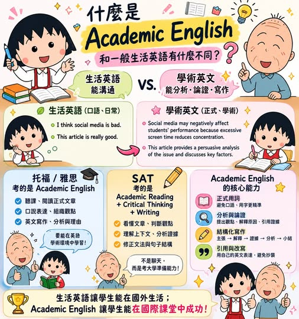

《看懂制度，選對世界》第一集
什麼是學術英文 Academic English？
為什麼它和一般生活英語不一樣？進入國際課程或海外大學後，通常才會發現： 和 生活英語重視的是：能不能溝通。學術英文重視的是： 能不能閱讀、分析、論證、寫作，並用正式英文表達觀點。

【什麼是 Academic English？】 為什麼它和一般生活英語不一樣？進入國際課程或海外大學後，通常才會發現： 和 生活英語重視的是：能不能溝通。學術英文重視的是： 能不能閱讀、分析、論證、寫作，並用正式英文表達觀點。. 什麼是 Academic English？Academic English，中文常稱為「學術英文」，指的是學生在學校、報告、論文、簡報、考試與研究中使用的英文。
它不是單純背更難的單字，而是要能用英文完成： Essay 論說文、Research Report 研究報告、Presentation 簡報、Case Study 個案分析、Reflection 反思寫作，以及 Source Analysis 資料分析。所以 Academic English 不是「英文課」才需要，而是進入 OSSD、IB、AP、Foundation、Pathway 或海外大學後，幾乎每一門課都會用到的能力。. 生活英語 vs. 學術英文：差在哪裡？
生活英語可以很直接： I think social media is bad because people waste too much time on it. 學術英文會寫成： Social media may negatively affect students’ academic performance because excessive screen time can reduce concentration and increase distractions. 差別不只是句子變長，而是學術英文需要說明 Academic English 會避免太口語的字，例如 good、bad、stuff、really、a lot of，改用更正式、更精準的詞，例如 evidence、factors、indicates、demonstrates、significant、problematic。
. 托福、雅思考的是哪種英文？托福 iBT 和 IELTS Academic，主要考的就是 Academic English。托福 iBT 評量的是學生在課堂、研究與課堂討論中會使用的英文能力；IELTS Academic 則是為準備進入大學、研究所或專業註冊的學生設計。也就是說，是考學生能不能：聽懂課堂內容、閱讀正式文章、組織觀點、完成英文寫作，並用英文表達分析與理由。. 考的是哪種英文？
SAT 是 它不是像托福、雅思那樣專門測驗非英語母語者的英文能力，而是『評估學生是否具備進入大學所需的閱讀、寫作、數學與邏輯能力』。College Board 官方說明，SAT 包含 Reading and Writing 與 Math 兩大部分。所以 SAT 的英文更接近： + + SAT 可能會考： In the passage, the word “claim” most nearly means... 學生不能只靠背單字，而是要根據文章脈絡判斷意思。
. 結語 對準備 OSSD、IB、AP、Foundation、Pathway、托福、雅思、SAT 或海外大學申請的學生來說，真正需要提前訓練的，不只是「英文會不會說」，而是能不能用英文閱讀、思考、分析、寫作，並清楚表達自己的觀點。這才是 Academic English 最重要的價值。